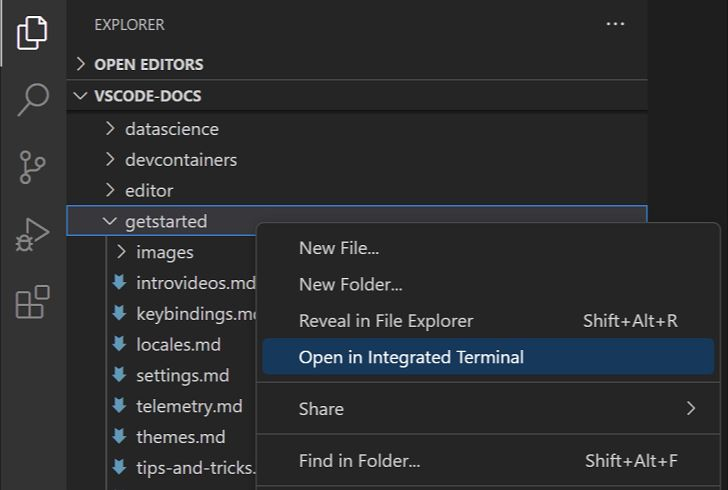
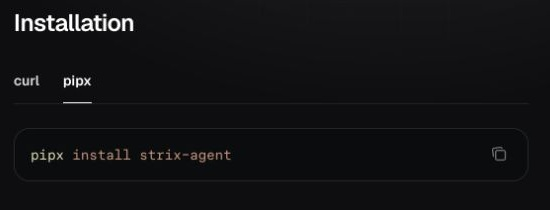

САЙТ С CLAUDE CODE И CODEX
Пять инструментов для сайта в Claude Code и Codex
Средний уровень
Сайт выглядит готовым, а кнопка не нажимается, заявка не сохраняется и на телефоне съезжают отступы. Как найти причину и проверить исправление, если ты собираешь сайт с Claude Code или Codex и не читаешь код?
Ниже пять инструментов: каждый проверяет свою часть сайта и даёт результат, который можно увидеть. Один из них стоит подключить до первой правки кода: это Context7, раздел 5. В последнем разделе разберём, почему порядок подключения помогает избежать повторных ошибок.
Содержание статьи
Пять задач сайтаСколько это стоитДва пути установкиГде вводить команды1. Playwright CLI2. Supabase3. Strix4. SkillUI5. Context7С чего начатьКакие инструменты понадобятся
- Playwright CLI открывает браузер и повторяет действия посетителя, чтобы проверить кнопки и формы.
- Supabase хранит данные сайта, в том числе заявки из формы.
- Strix ищет уязвимости и проверяет, можно ли ими воспользоваться.
- SkillUI извлекает дизайн-систему понравившегося сайта: цвета, шрифты, размеры и отступы.
- Context7 подгружает документацию библиотек, с которыми работает агент.
Все пять устанавливать необязательно. Выбирай по задаче: если потерялась заявка, начинай с её сохранения; если ничего не происходит после нажатия кнопки, проверяй форму.
Сколько это стоит
Установка инструментов и работа ИИ-модели - разные расходы. Условия ниже проверены 08.10.2026. Запросы в Claude Code или Codex расходуют лимит твоего аккаунта по его тарифу.
- Playwright CLI: локальная программа работает без подписки на отдельный сервис. Лицензия Microsoft.
- SkillUI: извлекает оформление без подписки и без API-ключа модели. Условия разработчика.
- Strix: локальная программа работает без подписки на Strix Cloud. Нужен API-ключ модели (секретный код доступа программы к нейросети). Проверка тратит лимит и рассчитывается отдельно по тарифу провайдера. Подписка ChatGPT не включает использование API. Варианты Strix, учёт расходов OpenAI.
- Supabase: локальная база работает без подписки на облачный сервис. В облаке есть уровень Free («без подписки») с ограничениями; при росте проекта действуют тарифы сервиса. Локальная разработка, условия Supabase.
- Context7: уровень Free («без подписки») даёт доступ к открытой документации и тратит месячный лимит обращений. После исчерпания действует ограничение, расширение доступа - по тарифу сервиса. Условия Context7.
Docker Desktop - отдельная программа для локального Supabase и Strix. Для личного использования доступен план без подписки; условия для организаций отличаются. Тарифы Docker, проверка 08.10.2026.
Два пути установки
Путь 1: агент ставит сам
Открой чат Claude Code или Codex в папке сайта и поручай установку агенту. Готовые запросы для чата есть в каждом разделе ниже: скопируй подходящий целиком.
Попроси показывать команды и ждать разрешения. Проверь настройки доступа агента: одного текста в чате недостаточно, чтобы включить подтверждения. Как выбрать режим: Claude Code и Codex.
Путь 2: выполняешь установку самостоятельно
Пошаговая инструкция для каждого инструмента - ниже, в разделах 1-5, под подзаголовком «Если вводишь своими руками». Ничего не нужно знать заранее.
Где нужны твои действия
- Установка обычных программ: выбери свою систему на странице Node.js или Docker Desktop. Пароль от компьютера вводи в окне установки.
- Ключ модели для Strix: получи его у провайдера и введи в терминал по шагу 4.
- Вход в Context7: заверши авторизацию в браузере.
- Облачный Supabase: создай проект сервиса для опубликованного сайта. Локальную базу сначала проверим на компьютере.
Где вводить команды
Ниже два вида блоков: команды для терминала и текст, который нужно отправить агенту в чат. Терминал - панель, где программы запускаются текстовыми командами.
- Открой папку своего сайта в редакторе. В VS Code нажми правой кнопкой на папку в левой панели и выбери Open in Integrated Terminal («Открыть во встроенном терминале»). Работа в новом терминале начнётся из выбранной папки.

На скриншоте выделен нужный пункт. Источник: официальная документация VS Code.
Результат: Внизу редактора открыт терминал выбранной папки.
- В терминал вставляй по одной команде и нажимай Enter («Ввод»). Дождись завершения, затем вводи следующую. Блоки с подписью «Отправь в чат» копируй в разговор с Claude Code или Codex.
Результат: После выполнения команды снова появляется строка ввода; запрос для чата находится в разговоре с агентом.
- Для SkillUI, Playwright CLI и приведённого ниже способа установки Supabase нужен Node.js. Проверь его двумя командами:
Введи в терминал
node --version
npm --versionДля этого набора нужен Node.js 20 или новее: это требование Supabase CLI (CLI означает управление программой через команды). Node.js запускает такие программы, а npm устанавливает их. Если команда не найдена или версия ниже, установи LTS-версию (версию с длительной поддержкой) с официальной страницы Node.js, выбрав свою операционную систему. После установки открой новый терминал.
Результат: Обе команды показывают номера версий, версия Node.js не ниже 20.
- Перед изменениями сохрани текущую версию сайта. Форму проверяй с тестовыми данными.
Результат: В отдельной папке есть копия сайта, а для формы подготовлены тестовые данные.
1. Playwright CLI для проверки кнопок и форм
Форма на месте, но кнопка «Отправить» ничего не делает. Или на компьютере всё работает, а на телефоне кнопку закрывает другой блок. Playwright CLI открывает браузер, нажимает кнопки, заполняет поля и сохраняет скриншоты. Агент проверяет тот же путь, по которому идёт посетитель.
Playwright проверяет действия в браузере. Сохранение заявки нужно отдельно подтвердить в базе: сообщение «Отправлено» само по себе этого не доказывает.
Отправь в чат
Установи Playwright CLI командой npm install -g @playwright/cli@latest
и его навык для агентов командой playwright-cli install --skills.
Перед каждой командой покажи её и дождись моего разрешения.
В конце проверь, что playwright-cli --help работает.Результат: Агент показывает справку playwright-cli и подтверждение установки навыка.
Если вводишь своими руками
- В терминале установи инструмент:
Введи в терминал
npm install -g @playwright/cli@latestРезультат: Установка заканчивается без ошибки и возвращается строка ввода.
- Открой справку и добавь навык для агента:
Введи в терминал
playwright-cli --help
playwright-cli install --skillsРезультат: Терминал показывает справку Playwright CLI и подтверждает установку навыка.
- Запусти свой сайт. Если не знаешь как, отправь агенту: «Запусти этот проект для проверки в браузере и покажи адрес страницы с формой».
Результат: В браузере открывается страница твоего проекта по адресу, который показал агент.
- Когда сайт запущен, отправь в чат:
Отправь в чат
Проверь форму на запущенном сайте через playwright-cli.
Сначала прочитай playwright-cli --help.
Открой адрес моего проекта с параметром --headed,
чтобы мне были видны браузер и твои действия.
Заполни поля тестовыми данными и нажми «Отправить».
Проверь результат, ошибки консоли и сохрани скриншот.
Повтори проверку при ширине экрана телефона.
Покажи, на каком шаге возникла проблема и как её исправить.Результат: Агент показывает скриншот, результат отправки формы и найденные ошибки для компьютера и телефона.
- После исправления попроси повторить тот же сценарий. Посетитель должен заполнить форму, нажать кнопку и получить понятный результат. Сохранение заявки отдельно проверь в Supabase.
Для знакомства с инструментом можно открыть официальный демонстрационный сайт:
Введи в терминал
playwright-cli open https://demo.playwright.dev/todomvc/ --headed
playwright-cli screenshot
playwright-cli closeПодробнее: Playwright CLI от Microsoft.
Результат: После повторной отправки виден понятный ответ формы; запись в базе проверишь в следующем разделе.
2. Supabase для сохранения заявок
Посетитель заполнил форму и увидел «Отправлено», а ты нигде не находишь его заявку. Нужно связать форму с базой данных и убедиться, что отправка действительно создаёт запись. Начнём с базы на компьютере, чтобы проверить подключение до публикации сайта.
Supabase хранит записи после подключения формы. Сам инструмент не добавляет отправку на сайт: это изменение делает агент, а ты проверяешь новую строку в таблице.
Для пути через агента сначала установи и запусти Docker Desktop по ссылке в шаге 1 ниже. Затем отправь в чат:
Отправь в чат
Установи Supabase CLI в этом проекте:
npm install supabase --save-dev.
Docker Desktop уже запущен.
Перед каждой командой покажи её и дождись моего разрешения.
Проверь справку командой npx supabase --help.
Если папка supabase уже есть, сначала проверь её настройки.
Если её нет, создай настройки командой npx supabase init.
Запусти локальную базу командой npx supabase start.
Дождись завершения и покажи адрес Studio из вывода.Результат: Агент показывает адрес Studio запущенной локальной базы.
Если вводишь своими руками
- Установи и запусти Docker Desktop. Он нужен для запуска локальной базы и других компонентов Supabase. На странице установки выбери вариант для своей системы.
Результат: Docker Desktop открыт, среда запуска контейнеров готова к работе.
- В терминале проекта введи по очереди:
Введи в терминал
npm install supabase --save-dev
npx supabase --helpРезультат: Команда npx supabase --help выводит справку.
- Создай настройки Supabase и запусти его:
Введи в терминал
npx supabase init
npx supabase startЕсли в проекте уже есть папка supabase, попроси агента проверить её настройки перед повторной инициализацией. Первый запуск загружает компоненты базы, поэтому дождись завершения.
Результат: В проекте есть папка supabase, в терминале - адреса запущенных сервисов.
- В выводе найди строку Studio («Панель базы»), скопируй адрес и открой его в браузере. Обычно это
http://127.0.0.1:54323. Studio - панель, в которой можно смотреть таблицы и сохранённые записи.
Результат: В браузере открыта панель Studio со списком разделов базы.
- Отправь в чат:
Отправь в чат
Подключи форму на моём сайте к локальному Supabase.
Создай таблицу leads для заявок и сохраняй в неё поля этой формы.
Посетитель должен отправлять заявку, но не видеть чужие записи.
Секретные ключи оставь на сервере.
Если запись не сохранилась, покажи ошибку вместо «Отправлено».
Сначала покажи план изменений.Результат: Агент показывает изменения формы и таблицу leads («Заявки»), куда будет записывать данные.
- После подключения отправь тестовую заявку. В Studio открой Table Editor («Редактор таблиц»), выбери таблицу leads («Заявки») в схеме public (раздел таблиц базы) и найди новую строку. Обнови страницу: запись должна остаться.
Подробнее: установка и запуск Supabase CLI, работа с таблицами, права доступа.
Результат: В таблице leads видна новая строка с тестовыми данными, она остаётся после обновления страницы.
3. Strix для проверки безопасности
Снаружи сайт работает, но ошибка в коде может открыть доступ к данным. Strix - программа для проверки безопасности: она ищет такие места и пытается подтвердить находки.
Отчёт Strix не гарантирует отсутствие всех уязвимостей. Агент должен разобрать находки, предложить исправления и повторить проверку после изменений.
Для локального запуска нужны работающий Docker, Python 3.12 или новее и API-ключ модели. Python - среда, в которой запускается Strix. Установи и запусти Docker Desktop, а Python и pipx подготовь по шагу 1. Требование версии: пакет Strix. Расходы модели разобраны в разделе «Сколько это стоит».
После подготовки отправь агенту запрос ниже. Он установит программу, а ключ ты введёшь самостоятельно по шагу 4.
Отправь в чат
Установи только программу Strix командой pipx install strix-agent.
Перед каждой командой покажи её и дождись моего разрешения.
Проверь, что strix --help работает.
Если strix не найдена, используй pipx ensurepath
и попроси меня открыть новый терминал для повторной проверки.
Ключ введу своими руками по шагу 4.
Не запрашивай ключ в чате и не запускай проверку сайта.Результат: Агент показывает справку strix; проверка сайта ещё не запускалась.
Если вводишь своими руками
- Для установки используем pipx: он устанавливает Python-программы в отдельное окружение. Если Python или pipx ещё нет, установи их по инструкции Python и инструкции pipx, выбрав вариант для своей системы.
Результат: В новом терминале доступны Python версии 3.12 или новее и команда pipx.
- На странице Quick Start открой вкладку pipx в блоке Installation («Установка»). Команду можно скопировать кнопкой справа.

Результат: На официальной странице видна команда pipx install strix-agent.
- В терминале выполни:
Введи в терминал
pipx install strix-agent
strix --helpЕсли команда strix не найдена, выполни pipx ensurepath и открой новый терминал.
Результат: Команда strix --help показывает справку.
- Получи API-ключ у своего провайдера модели. В примере используется OpenAI. Выбери команды по названию оболочки в терминале.
Bash или zsh:
Введи в терминал
export STRIX_LLM="openai/gpt-5.4"
printf 'Вставь API-ключ и нажми Enter: '
read -r -s LLM_API_KEY
export LLM_API_KEYPowerShell:
Введи в терминал
$env:STRIX_LLM = "openai/gpt-5.4"
$key = Read-Host "Вставь API-ключ и нажми Enter" -AsSecureString
$env:LLM_API_KEY = [System.Net.NetworkCredential]::new("", $key).PasswordРезультат: Терминал возвращается к строке ввода после скрытого ввода ключа; в переписке ключа нет.
- В той же вкладке терминала, из папки тестового проекта, запусти проверку:
Введи в терминал
strix --target .Результат: В терминале виден ход проверки; после завершения появляется папка strix_runs с отчётом.
- По завершении открой папку
strix_runs, затем папку этой проверки. Отправь в чат:
Отправь в чат
Прочитай отчёт последней проверки в strix_runs.
Объясни найденные уязвимости: что может сделать посторонний
и какое изменение закроет проблему.
Сначала покажи предлагаемые исправления.
После исправлений повторно проверь найденные уязвимости.После работы закрой вкладку терминала с ключом. Исправления нужно проверить повторным запуском.
Подробнее: Strix Quick Start, требования Python, подключение OpenAI.
Результат: Агент объясняет находки отчёта и показывает, что изменилось после повторной проверки.
4. SkillUI для цветов, шрифтов и отступов
На одной странице кнопки круглые, на другой квадратные, заголовки разного размера. SkillUI - программа, которая извлекает оформление сайта-образца и сохраняет его в файлы. Агент читает цвета, шрифты и отступы перед правкой твоей страницы.
Отправь в чат
Установи SkillUI командой npm install -g skillui.
Перед каждой командой покажи её и дождись моего разрешения.
В конце проверь, что skillui --help работает.Результат: Агент показывает справку skillui.
Если вводишь своими руками
- В терминале установи инструмент и открой справку:
Введи в терминал
npm install -g skillui
skillui --helpРезультат: Команда skillui --help показывает справку.
- Выбери сайт, оформление которого подходит твоему проекту. Ниже пример с Linear. Замени его адрес своим:
Введи в терминал
skillui --url https://linear.app --out ./design-reference --name my-siteРезультат: Внутри design-reference появляется папка my-site-design.
- В левой панели редактора открой design-reference/my-site-design. Команда создаёт вложенную папку:
--outзадаёт родительскую, а--name my-site- имя. Найди SKILL.md и references/DESIGN.md с цветами, шрифтами и отступами. Как SkillUI записывает файлы.
Результат: В редакторе открыты SKILL.md и references/DESIGN.md с описанием оформления.
- Отправь в чат:
Отправь в чат
Прочитай SKILL.md и references/DESIGN.md
в папке design-reference/my-site-design.
Приведи оформление моего сайта к этим цветам, шрифтам и отступам.
Сохрани мои тексты, структуру и назначение кнопок.
Сначала покажи, какие изменения предлагаешь.После правки открой страницу на компьютере и телефоне: заголовки, кнопки и расстояния между блоками должны следовать одному стилю. SkillUI извлекает оформление, а изменения в твоём сайте вносит агент.
Подробнее: SkillUI на GitHub.
Результат: На компьютере и телефоне видны согласованные цвета, шрифты и отступы; назначение кнопок сохранено.
5. Context7 для документации под версию проекта
Ты просишь исправить сайт, а агент предлагает знакомый ему пример кода. Только в твоей версии библиотеки эта команда уже изменилась. Пока агент опирается на старую память, правки могут возвращать ту же ошибку.
Context7 передаёт агенту документацию библиотек (готовых частей, из которых собран сайт). Подключение через MCP (способ дать агенту доступ к внешнему инструменту) настраивается отдельно для Claude Code и Codex. Затем агент должен определить версию в проекте и найти подходящий пример.
Отправь в чат
Добавь подключение Context7 к текущему агенту.
Перед каждой командой покажи её и дождись моего разрешения.
Если работаешь в Codex, используй команду:
codex mcp add context7 --url https://mcp.context7.com/mcp/oauth
Затем начни вход командой codex mcp login context7.
Вход в браузере завершу своими руками.
После моего подтверждения проверь codex mcp list.
Если работаешь в Claude Code, используй команду:
claude mcp add --scope user --transport http context7 https://mcp.context7.com/mcp/oauth
Затем объясни, как выбрать context7 и Authenticate через /mcp.
Авторизацию в браузере пройду своими руками.Результат: После твоего входа агент показывает активное подключение context7.
Если вводишь своими руками
В Codex
- В терминале добавь Context7:
Введи в терминал
codex mcp add context7 --url https://mcp.context7.com/mcp/oauthРезультат: Context7 добавлен в список подключений Codex.
- Начни вход:
Введи в терминал
codex mcp login context7Результат: Терминал показывает ссылку для входа; открой её, если браузер не открылся сам.
- Заверши авторизацию на странице Context7, которая откроется в браузере.
Результат: Страница входа сообщает об успешной авторизации.
- Проверь список подключений:
Введи в терминал
codex mcp listВ списке должен появиться context7. Открой новый чат Codex в папке проекта.
Результат: Команда показывает context7; новый чат видит подключение.
В Claude Code
- В терминале добавь Context7:
Введи в терминал
claude mcp add --scope user --transport http context7 https://mcp.context7.com/mcp/oauthРезультат: Терминал подтверждает добавление context7 в Claude Code.
- В Claude Code введи
/mcp, выбери context7, затем пункт авторизации Authenticate («Авторизоваться») и заверши вход в браузере.
Результат: После входа список MCP показывает авторизованный Context7.
- Вернись в Claude Code и убедись, что подключение активно.
Результат: В новом разговоре агент видит инструменты Context7.
Что попросить у агента
Отправь в чат
Перед изменением кода определи установленную версию нужной библиотеки
по файлу зависимостей проекта.
Через Context7 найди документацию для этой версии.
Покажи версию и ссылку, затем предложи решение моей задачи.
Если документации для точной версии нет, проверь официальный сайт.Посмотри, какую версию и источник указал агент. После изменения кода запусти сайт и проверь сценарий, ради которого делалась правка.
Результат: Агент показывает версию библиотеки и ссылку на документацию, а исправленный сценарий проходит проверку на сайте.
Подробнее: подключение Context7 к клиентам, MCP в Codex, MCP в Claude Code.
Почему пятый инструмент стоит подключить первым
Context7 нужен до написания кода: агент должен определить версию библиотеки и прочитать подходящую документацию. Иначе он может снова предложить команду, которая в твоём проекте уже не работает.
Поэтому начни с Context7 из раздела 5, затем выбери инструмент под свою проблему. Playwright проверяет путь посетителя, Supabase позволяет увидеть сохранённую заявку, Strix ищет уязвимости, а SkillUI даёт образец оформления. После каждой правки повтори действие посетителя и посмотри на результат.
Проверку формы можно поручать после каждого изменения сайта.
Бесплатный Концентрат
Сайт собран. Как поручить его проверки команде ИИ-агентов?
Ты знаешь, чем проверить кнопки и заявки. Дальше можно собрать команду ИИ-агентов для таких проверок. На Концентрате три вечера, 13-15 октября в 19:00 по Москве, онлайн: работа с командой агентов в Claude Code, Codex и ChatGPT.
Занять местоРегистрация на сайте до 14 октября, участие бесплатное
Реклама. ИП Сергеев И. С., ИНН 352511695540. erid: 2VtzqviiWtm